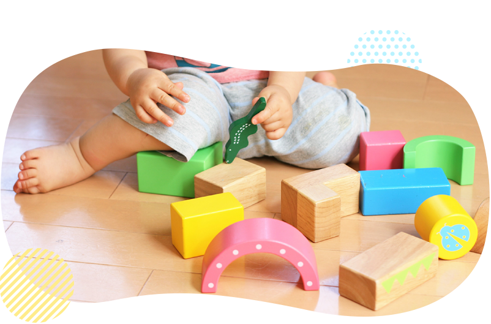
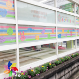

今、お母様方が求めていらっしゃるのは 安心してお子さまを任せられる人ではないでしょうか？
もっと社会にでたい、 勉強がしたい、 自分の時間がもちたい・・
そんなお母様とお子さまを応援しています。
ベビーシッター
各種場面に応じたシッターが忙しいあなたをサポート。助成金など各種特典もご紹介します。
子供を安心して誰かにたのめたら…
ご自宅で
シッターがお客様宅にお伺いします。お仕事の都合や、ご自身やご夫婦のプライベートなお時間が欲しいとき、ご自身の体調がすぐれない時など、様々な場面でお子様のお世話をさせて頂きます。
お出かけの時に
お客様宅以外で、保護者様に同行して、お子様をお世話します。お出掛け先や病院など保護者様に同行し、お子様の世話をお手伝いさせて頂きます。
ご自宅以外の場所でも
お客様宅以外の場所(児童館や、スポーツジム等)でお世話します。
例えば、児童館や図書館、冠婚葬祭時の会場でのお子様のお世話などをさせて頂きます。
例えば、児童館や図書館、冠婚葬祭時の会場でのお子様のお世話などをさせて頂きます。
ご病気の時や、病後に…
お子様の急な病気で、外出に連れて行けない場合のお世話をします。
お子様の体調がすぐれず、集団保育が難しい時にご自宅に伺い、お子様のお世話をさせて頂きます。
病気のお子様をお預かりする場合は、当社独自の規約がございますので、まずはお電話でご相談下さい。
（※指定感染病や高熱の場合はお預かり出来かねることがあります）

お子様の体調がすぐれず、集団保育が難しい時にご自宅に伺い、お子様のお世話をさせて頂きます。
病気のお子様をお預かりする場合は、当社独自の規約がございますので、まずはお電話でご相談下さい。
（※指定感染病や高熱の場合はお預かり出来かねることがあります）
送迎・二重保育に
保育園や学童保育へ送り迎えをします。また、引き続き自宅でのお世話や塾等へのお送りも致します。
急な残業で、幼稚園等にお子様のお迎えに行けない時などに、当社シッターがお子様を園にお迎えに行き、ご自宅で引き続きお世話をさせて頂きます。
急な残業で、幼稚園等にお子様のお迎えに行けない時などに、当社シッターがお子様を園にお迎えに行き、ご自宅で引き続きお世話をさせて頂きます。
グループ保育も
お母さんたちの会合の間などの保育、冠婚葬祭の会場・イベント会場での保育等。
協会の安全基準に沿った人数のスタッフが伺います。

協会の安全基準に沿った人数のスタッフが伺います。
家事が必要な場合も
お掃除・お食事の支度・お買い物・お洗濯など、必要な時に必要なサービスだけを選べます。
※家事代行を行いながらのシッティングは、お子様の安全上幼稚園年長以上に限らせて頂いております。
※家事代行を行いながらのシッティングは、お子様の安全上幼稚園年長以上に限らせて頂いております。
ご利用方法
1
お申し込み
お電話でお申込み下さい。
予約受付時間（月曜～土曜日）9：00～18：00熊本地区 TEL 096-356-5453
2
ご入金
会員制となっております。
お電話でお申込みの後、お手続きにお伺いいたします。3
ご予約
お電話でお申込みください。 原則として2日前までにご予約ください。
伝える事・利用日 ・利用時間
・子供に関する情報（名前、性別、生年月日、アレルギーの有無等）
・保育場所（送迎の有無）等
・どのようなお世話をしてほしいか。 ・食事やおやつについて
・お昼寝の時間や寝るときのくせ ・好きな遊び、おもちゃ
・しつけのポイント ・訪問者や電話の対応方法等
・保育園等へのお迎えや、おけいこ事への送迎についての方法等
4
ご利用
お約束の時間にシッターがご指定の場所に伺います。
（当社規定の身分証明書を携帯しております。）5
お支払い
毎月のご利用料金は稼動報告書をもとに末日締め翌月20日にお客様の口座から引き落とし、
もしくは指定銀行への振込みとさせて頂きます。
もしくは指定銀行への振込みとさせて頂きます。
料金
入会金 32,400円 ／ １家族
年会費 7,020円 ／ お子様1名（お二人目から半額）
年会費 7,020円 ／ お子様1名（お二人目から半額）
| 時間帯 | 会員 | ビジター |
| 9：00～18：00 | 3,456円／2H（はじめの2時間） | 4,536円／2H（はじめの2時間） |
| 1,728円／H 超過１時間 | 2,268円／1H 超過1時間 | |
| 18：00～22：00 | 216円／H 加算 | 216円／H 加算 |
| 7：00～ 9：00 | ||
| 22：00～ 7：00 | 500円／H 加算 | 500円／H 加算 |
| 交通費 | 実費 | 1.000円／人 |
| キャンセル料 | 前日 1,080円／件 | 前日 50％ |
| 当日 100％ | 当日 100％ | |
| 1家族2人以上の場合 2人目から |
864円／Ｈ （お子さま１人当り） |
864円／H （お子さま１人当り） |
| 保険料 | 年会費に含まれる | 540円／人 |
●特別加算
・特別期間料金 （4/29～5/5・8/13～8/15・12/28～1/4）400円／1Ｈ 加算
・当日予約料・時間外予約手数料 1,080円／件
・家事加算（小学生以上） 540円／H加算
●その他
・ツインズパッケージ 3,000円／1Ｈ （最低３時間） 交通費：実費（双子のお子様の為のご料金です
O上記料金は2017年4月より適用で消費税（8％）込の料金です。
利用できる助成金
●ベビーシッター育児支援事業
申込手続きをした一般事業主に雇用されている共働きの従業員の方がベビーシッターを利用した場合、その利用料金の一部として助成されます。
1日1枚2,200円の割引チケットが利用できます。この割引チケットはベビーシッター業務にのみ適用され保育ルームの利用には使用できません。
●双生児家庭支援事業
申込手続きをした一般事業主に雇用されている共働きの従業員の方で、就学未満の多胎児の育児を行う保護者が、リフレッシュとしてベビーシッターを利用した場合に助成されます。
| 双子 | 三つ子以上 | |
| 助成額（上限）： | 9,000円 | 18,000円 |
お問い合せ・利用申込み先：公益社団法人全国保育サービス協会
TEL：03-5363-7455
ホームページ：
http://www.acsa.jp/
特典
下記の福利厚生会社と法人契約を締結しておりますので、それぞれの会員の方は、各種優待をお受けいただくことができます。
ご利用をお考えの際には、ご勤務先のご担当部署にお問い合わせください。
●福利厚生会社一覧
| 契約会社 | 会員名 |
| 株式会社リロクラブ | 福利厚生倶楽部、CLUB CCI リロクラブ |
| 株式会社イーウェル | ウェルボックス |
| JTBベネフィット | えらべる倶楽部 |
| リゾートソリューション株式会社 | ライフサポート倶楽部 |
| 株式会社ベネフィット・ワン | ベネフィットステーション・CLUB、CCI、リビング倶楽部防衛庁共済会 |
| 株式会社シーネット | ウェルフェアーサービス |

グランマー（産褥シッター）
専門のグランマー（産褥シッター）が ご自宅にお伺いして 、生後2ヵ月までの赤ちゃんのお世話を中心に、ご出産前後のお母様のお手伝いをいたします。ミルクの調乳・お子様への授乳、お母様のそばで沐浴のお手伝いの他、家事のサポートをさせて頂きます。
料金
一日３時間のグランマー（産褥シッター）が、ご自宅にお伺いして、生後２ヵ月までの 赤ちゃんお世話を中心に、ご出産前後のお母様の
お手伝いをいたします。
お客様のご希望に合わせて３つのコースをご用意いたしました。
赤ちゃんのお世話・沐浴のお手伝い簡単な家事・お母様のお世話等


お手伝いをいたします。
お客様のご希望に合わせて３つのコースをご用意いたしました。
赤ちゃんのお世話・沐浴のお手伝い簡単な家事・お母様のお世話等
| らくらくコース | ３時間×７日間 | ４８,３００円 |
| のびのびコース | ３時間×10日間 | ６９,０００円 |
| ゆったりコース | ３時間×14日間 | ９６,６００円 |
※交通費：実費
※お時間は９：００～１７：００の中で３時間お選びください。
※ご予約は出産予定日の１カ月まえを目安にお願いいたします。
◯2014年4月から適用で消費税込の料金です。
炊事
ご家族のお食事作り、ご家族のお食事後の食器洗い、片付け
掃除
赤ちゃんが過ごす部屋の掃除（掃除機、床拭き）、ベビーバス洗い
洗濯
洗濯機に洗剤を入れる～干す、乾いた洗濯物を取込み～たたむ

ファミリーケアサービス
外でアクティブに働く女性の方へ

毎日仕事が忙しくて家事をする時間がない。
共働きで仕事や家事に追われている。
週末はのんびり買い物やランチを満喫したい。
忙しいご家族の方へ
毎日仕事が忙しくて家事をする時間がない。
共働きで仕事や家事に追われている。
週末はのんびり買い物やランチを満喫したい。
たまには子育てを休憩したい奥さまへ
毎日毎日子育てに追われ、自分の時間が取れない。
普段の生活を忘れ、子どもとのんびり出かけたい。
家族と外出した後、片付いたお部屋に帰りたい。
家事に育児に奥さまは疲れが溜まる一方。たまにはゆっくり休んでください。
アピカルのファミリーケアサービスは、今まで主婦の方々が行っていた「おそうじ」「洗濯」「料理」など「日常の家事」をみなさまに代わって弊社のヘルプスタッフがお手伝いをするサービスです。
普段家のことがなかなか出来ない、忙しい方向けにも好評を頂いております。
今まで「家政婦さん」などに代表されるように「高価」なものとして捉えられているサービスですが、アピカルでは「気軽に頼める明確な料金」と「安心できるスタッフ教育システム」を確立し「独身の方」「共働き夫婦」「お子様のいる家庭」「高齢の方」など、あらゆるライフスタイルの方々にご利用いただいております。スタッフはみんな主婦経験のあるお世話好きな人ばかりですので、日々の中でお悩みの事がありましたらお気軽にご相談下さい。皆様の幅広いニーズに対応できるサービスです。
トラブル対応
既存の家政婦紹介所の場合は、お客様自身の個別契約となる為、もしものトラブルの際も協議の上に自己責任というケースが多いようですが、本サービスの場合は損害保険加入済みですのでサービスの範囲・時間内のトラブルに関して保障させて頂いております。
サービス内容
一般家庭レベルの掃除、ゴミだし、整理整頓、洗濯、アイロン掛け、衣類の整理、簡単な調理、布団干し、庭の手入れ、送り迎え、業者立会い留守番、お買い物など
お客様のご要望をお伺いして「適したスタッフ」「適したプラン」をご提案します。
お客様のご要望をお伺いして「適したスタッフ」「適したプラン」をご提案します。
料金
日常の家事から解放されたい方をサポートいたします！専任のメイドスタッフが毎週定期的にお伺いすることにより、常に清潔で快適なお部屋が維持できるようになっております。
入会金 32,400円
年会費 7,020円
入会金 32,400円
年会費 7,020円
2時間コース
4,536円（熊本地区）
水まわりの日常的なおそうじや整理整頓などを中心に考えている方から一番ご注文いただいています。
3時間コース
6,804円（熊本地区）
もっとも標準的なコースです。全体的なおそうじを中心にほとんどの内容をこなすことが出来ます。
※別途交通費：実費
※損害保険料込み
※1名の料金です（2名希望の場合はご相談下さい）
※早朝（7-9）、夜間（17-22）は1時間当たり216円増し
割増料金
| 当日予約手数料 | 別途 1,080円 |
| 前日キャンセル | 1,080円 |
| 当日キャンセル | 予約料金の100％ |
| 特別期間加算 | 540円/1h |
※特別期間 ・・・ 年末年始・ゴールデンウィーク・お盆 （4/29～5/5・8/13～8/15・12/28～1/4）
○上記は2017年4月より適用で消費税8％込の料金です。

小規模認可保育園
小規模認可保育園は「子ども子育て支援制度」により平成27年4月から本格的にスタートしました。アピカルでは、市町村が窓口になり
認可を受けた19人までの定員の“小規模保育事業”を展開しています。ご利用は0～２歳児までですが、小規模ならではの家庭的な、き
め細かい保育が可能です。
利用の流れ
1
市町村に「保育の必要性」の認定を申請します
利用希望の申込みも同時にできます。
2
市町村から認定証が交付されます
2号認定・3号認定
3
保育所等の利用希望の申込みをします
希望する施設名などを記載
4
利用調整
保育を必要とするお子さん（2号、3号認定）の場合、必要に応じ、
市町村が利用可能な保育所等のあっせんなどもします。
5
利用先の決定後、契約となります
3つの認定区分
新制度ではお住まいの市町村による3つの区分の認定に応じて利用先が決まります。小規模保育園は地域型の3号認定となります。
1号認定
教育標準時間認定
お子さんが満3歳以上で、幼稚園等での教育を希望される場合
利用先：幼稚園、認定こども園
1号認定
教育標準時間認定
お子さんが満3歳以上で、幼稚園等での教育を希望される場合
利用先：幼稚園、認定こども園
1号認定
教育標準時間認定
お子さんが満3歳以上で、幼稚園等での教育を希望される場合
利用先：幼稚園、認定こども園
新制度の利用にかかる保育料は、保護者の所得に応じた支払いが基本となります。
新制度の様々な支援にかかる保育料の額は、現行の負担水準や保護者の所得に応じて、国が今後定める基準を上限として、市町村が地域
の実際の状況に応じて定めることになります。
契約・支払先は、利用する施設によって異なります。
地域型保育を利用する場合、利用者は施設・事業者と契約し、保育料を施設・事業者へ支払います。
施設について

あーす保育園
保田窪
所在地熊本市中央区
開 設平成27年4月
体 制基本時間７名体制
にじの森保育園
西宮北口
所在地熊本市南区
開 設平成28年4月
体 制基本時間７名体制